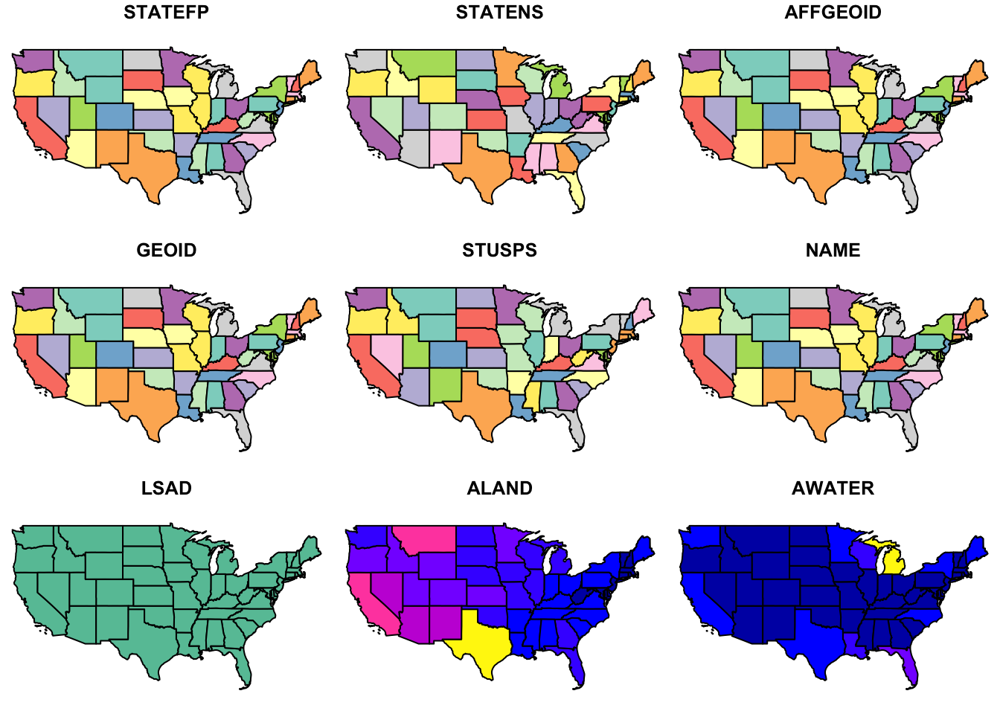
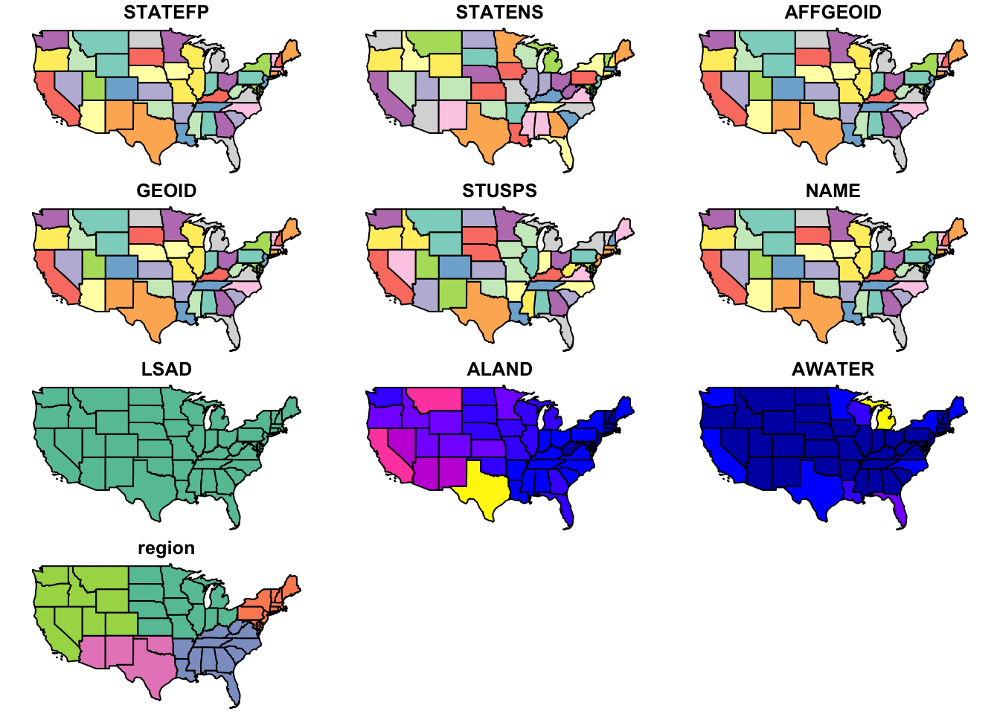
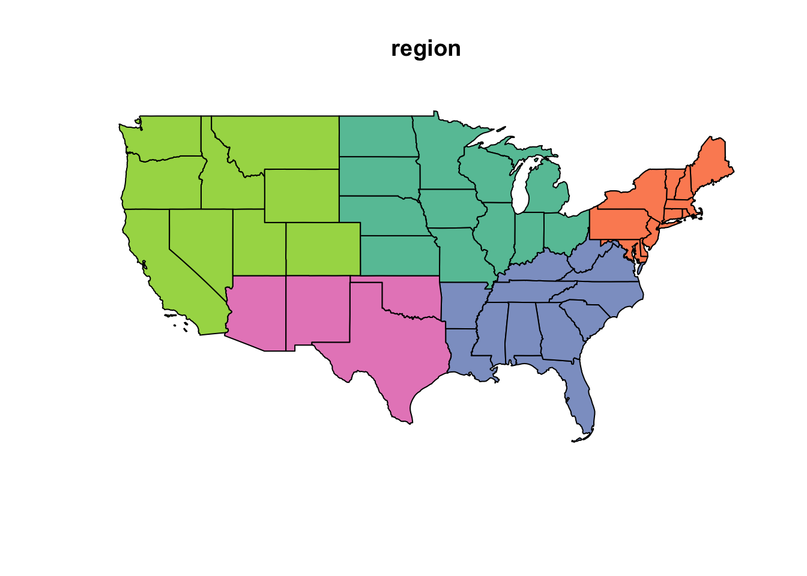
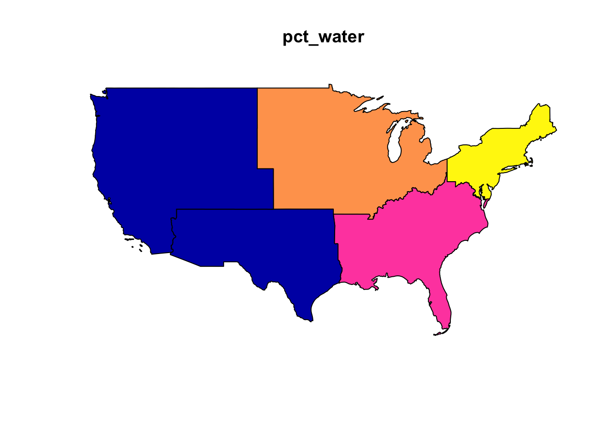
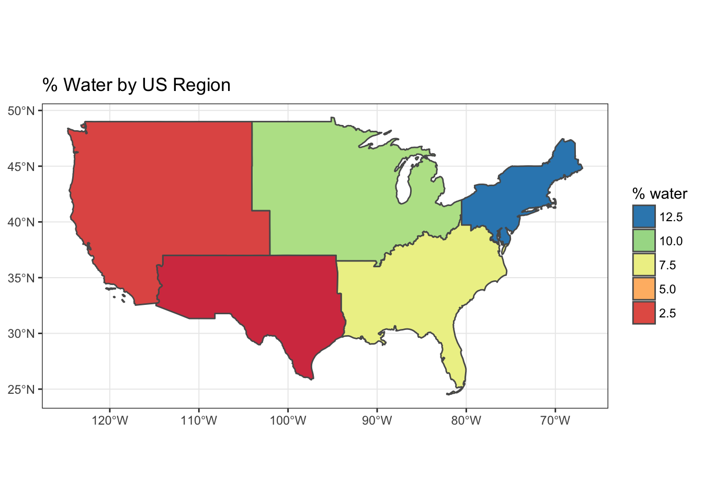
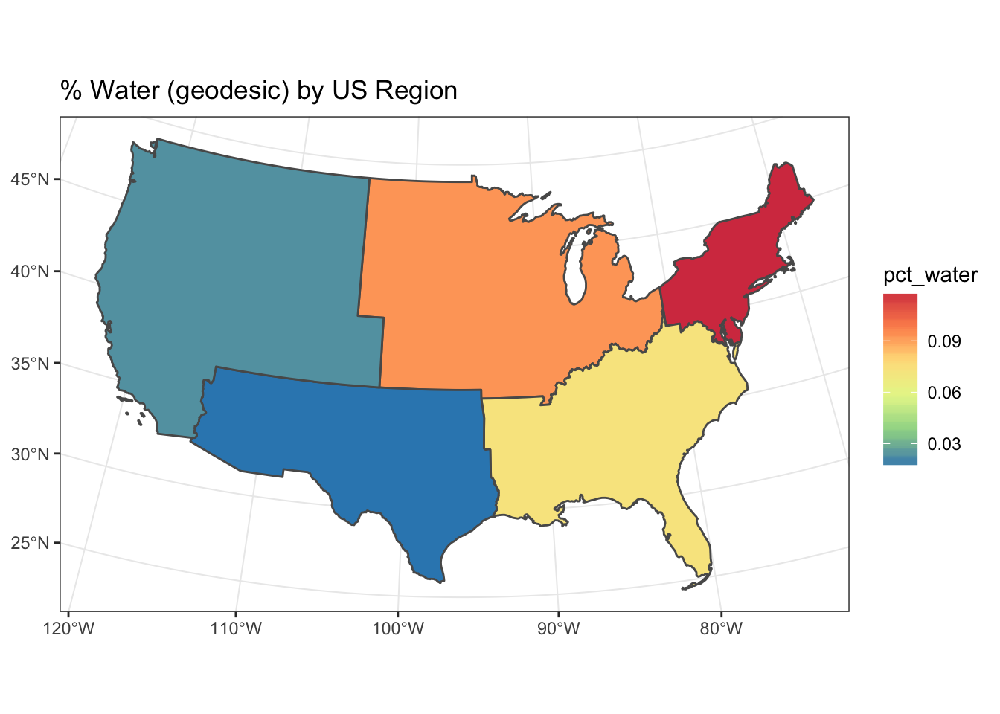

Lesson 1 Tidy Spatial Analysis
1.1 Overview
Questions
- How to elegantly conduct complex spatial analysis by chaining operations?
- What is the percent area of water by region across the United States?
Objectives
- Use the
%>%operator (aka “then” or “pipe”) to pass output from one function into input of the next. - Calculate metrics on spatial attributes.
- Aggregate spatial data with metrics.
- Display a map of results.
1.2 Prerequisites
R Skill Level: Intermediate - you’ve got basics of R down.
You will use the sf package for vector data along with the dplyr package for calculating and manipulating attribute data.
# load packages
library(tidyverse) # load dplyr, tidyr, ggplot2 packages
library(sf) # vector reading & analysis
# set working directory to data folder
# setwd("pathToDirHere")1.3 States: read and plot
Similar to Lesson 9: Handling Spatial Projection & CRS in R, we’ll start by reading in a polygon shapefile using the sf package. Then use the default plot() function to see what it looks like.
# read in states
states <- read_sf("data/NEON-DS-Site-Layout-Files/US-Boundary-Layers/US-State-Boundaries-Census-2014.shp")
# plot the states
plot(states)## Warning: plotting the first 9 out of 10 attributes; use max.plot = 10 to
## plot all
Notice the default plot on sf objects outputs colorized values of the first 9 of 10 columns. Use the suggestion from the warning to plot the 10th column.
# plot 10th column
plot(states, max.plot = 10)
# show columns of the data frame
names(states)## [1] "STATEFP" "STATENS" "AFFGEOID" "GEOID" "STUSPS" "NAME"
## [7] "LSAD" "ALAND" "AWATER" "region" "geometry"# look at table
glimpse(states)## Observations: 58
## Variables: 11
## $ STATEFP <chr> "06", "11", "12", "13", "16", "17", "19", "21", "22",...
## $ STATENS <chr> "01779778", "01702382", "00294478", "01705317", "0177...
## $ AFFGEOID <chr> "0400000US06", "0400000US11", "0400000US12", "0400000...
## $ GEOID <chr> "06", "11", "12", "13", "16", "17", "19", "21", "22",...
## $ STUSPS <chr> "CA", "DC", "FL", "GA", "ID", "IL", "IA", "KY", "LA",...
## $ NAME <chr> "California", "District of Columbia", "Florida", "Geo...
## $ LSAD <chr> "00", "00", "00", "00", "00", "00", "00", "00", "00",...
## $ ALAND <dbl> 403483823181, 158350578, 138903200855, 148963503399, ...
## $ AWATER <dbl> 20483271881, 18633500, 31407883551, 4947080103, 23977...
## $ region <chr> "West", "Northeast", "Southeast", "Southeast", "West"...
## $ geometry <simple_feature> MULTIPOLYGONZ(((-118.593969..., MULTIPOLYG...# convert to tibble for nicer printing
as_tibble(states)## Simple feature collection with 58 features and 10 fields
## geometry type: MULTIPOLYGON
## dimension: XYZ
## bbox: xmin: -124.7258 ymin: 24.49813 xmax: -66.9499 ymax: 49.38436
## epsg (SRID): 4326
## proj4string: +proj=longlat +datum=WGS84 +no_defs
## # A tibble: 58 x 11
## STATEFP STATENS AFFGEOID GEOID STUSPS NAME LSAD
## <chr> <chr> <chr> <chr> <chr> <chr> <chr>
## 1 06 01779778 0400000US06 06 CA California 00
## 2 11 01702382 0400000US11 11 DC District of Columbia 00
## 3 12 00294478 0400000US12 12 FL Florida 00
## 4 13 01705317 0400000US13 13 GA Georgia 00
## 5 16 01779783 0400000US16 16 ID Idaho 00
## 6 17 01779784 0400000US17 17 IL Illinois 00
## 7 19 01779785 0400000US19 19 IA Iowa 00
## 8 21 01779786 0400000US21 21 KY Kentucky 00
## 9 22 01629543 0400000US22 22 LA Louisiana 00
## 10 24 01714934 0400000US24 24 MD Maryland 00
## # ... with 48 more rows, and 4 more variables: ALAND <dbl>, AWATER <dbl>,
## # region <chr>, geometry <simple_feature>names(states)## [1] "STATEFP" "STATENS" "AFFGEOID" "GEOID" "STUSPS" "NAME"
## [7] "LSAD" "ALAND" "AWATER" "region" "geometry"# inspect the class(es) of the states object
class(states)## [1] "sf" "tbl_df" "tbl" "data.frame"The class of the states object is both a simple feature (sf) as well as a data frame, which means the many useful functions available to a data frame (or “tibble”) can be applied.
To plot the column of interest, feed the “slice” of that column to the plot() function.
plot(states['region'])
Question: To motivate the spatial analysis for the rest of this lesson, you will answer this question: “What is the percent water by region?”
1.4 Challenge: analytical steps?
Outline a sequence of analytical steps needed to arrive at the answer.
1.4.1 Answers
- Sum the area of water (
AWATER) and land (ALAND) per region. - Divide the area of water (
AWATER) by the area of land (ALAND) per region to arrive at percent water. - Show table of regions sorted by percent water.
- Show map of regions by percent water with a color ramp and legend.
1.5 Regions: calculate % water
- Use the
%>%operator (aka “then” or “pipe”) to pass output from one function into input of the next.- In RStudio, see menu Help > Keyboard Shortcuts Help for a shortcut to the “Insert Pipe Operator”.
- Calculate metrics on spatial attributes.
- In RStudio, see menu Help > Cheatsheets > Data Manipulation with dplyr, tidyr.
- Aggregate spatial data with metrics.
regions = states %>%
group_by(region) %>%
summarize(
water = sum(AWATER),
land = sum(ALAND)) %>%
mutate(
pct_water = water / land * 100 %>% round(2))
# object
regions## Simple feature collection with 5 features and 4 fields
## geometry type: GEOMETRY
## dimension: XYZ
## bbox: xmin: -124.7258 ymin: 24.49813 xmax: -66.9499 ymax: 49.38436
## epsg (SRID): 4326
## proj4string: +proj=longlat +datum=WGS84 +no_defs
## # A tibble: 5 x 5
## region water land pct_water geometry
## <chr> <dbl> <dbl> <dbl> <simple_feature>
## 1 Midwest 184383393833 1.943869e+12 9.485380 <MULTIPOLYGON...>
## 2 Northeast 108922434345 8.690661e+11 12.533273 <MULTIPOLYGON...>
## 3 Southeast 103876652998 1.364632e+12 7.612063 <MULTIPOLYGON...>
## 4 Southwest 24217682268 1.462632e+12 1.655761 <POLYGONZ((-9...>
## 5 West 57568049509 2.432336e+12 2.366780 <MULTIPOLYGON...>Notice the geometry in the column. To remove the geometry column pipe to st_set_geometry(NULL). To arrange in descending order use arrange(desc(pct_water)).
# table
regions %>%
st_set_geometry(NULL) %>%
arrange(desc(pct_water))## # A tibble: 5 x 4
## region water land pct_water
## <chr> <dbl> <dbl> <dbl>
## 1 Northeast 108922434345 8.690661e+11 12.533273
## 2 Midwest 184383393833 1.943869e+12 9.485380
## 3 Southeast 103876652998 1.364632e+12 7.612063
## 4 West 57568049509 2.432336e+12 2.366780
## 5 Southwest 24217682268 1.462632e+12 1.6557611.6 Regions: plot
Now plot the regions.
# plot, default
plot(regions['pct_water'])
1.7 Regions: ggplot
The ggplot2 library can visualise sf objects.
- In RStudio, see menu Help > Cheatsheets > Data Visualization with ggplot2.
# plot, ggplot
ggplot(regions) +
geom_sf(aes(fill = pct_water)) +
scale_fill_distiller(
"pct_water", palette = "Spectral", direction=1,
guide = guide_legend(title = "% water", reverse=T)) +
theme_bw() +
ggtitle("% Water by US Region")
1.8 Regions: recalculate area
So far you’ve used the ALAND column for area of the state. But what if you were not provided the area and needed to calculate it? Because the states are in geographic coordinates, you’ll need to either transform to an equal area projection and calculate area, or use geodesic calculations. Thankfully, the sf library provides area calculations with the st_area() and uses the geosphere::distGeo() to perform geodesic calculations (ie trigonometric calculation accounting for the spheroid nature of the earth). Since the states data has the unusual aspect of a z dimension, you’ll need to first remove that with the st_zm() function.
library(geosphere)
library(units)
regions = states %>%
mutate(
water_m2 = AWATER %>% set_units(m^2),
land_m2 = geometry %>% st_zm() %>% st_area()) %>%
group_by(region) %>%
summarize(
water_m2 = sum(water_m2),
land_m2 = sum(land_m2)) %>%
mutate(
pct_water = water_m2 / land_m2)
# table
regions %>%
st_set_geometry(NULL) %>%
arrange(desc(pct_water))## # A tibble: 5 x 4
## region water_m2 land_m2 pct_water
## <chr> <units> <units> <units>
## 1 Northeast 108922434345 m^2 9.117041e+11 m^2 0.11947126 1
## 2 Midwest 184383393833 m^2 1.987268e+12 m^2 0.09278233 1
## 3 Southeast 103876652998 m^2 1.427079e+12 m^2 0.07278971 1
## 4 West 57568049509 m^2 2.467170e+12 m^2 0.02333363 1
## 5 Southwest 24217682268 m^2 1.483765e+12 m^2 0.01632178 1# plot, ggplot
ggplot(regions) +
geom_sf(aes(fill = as.numeric(pct_water))) +
scale_fill_distiller(
"pct_water", palette = "Spectral", direction=1,
guide = guide_legend(title = "% water", reverse=T)) +
theme_bw() +
ggtitle("% Water by US Region")1.9 Challenge: project & recalculate area
Use st_transform() with a USA Contiguous Albers Equal Area Conic Projection that minimizes distoration, and then calculate area using the st_area() function.
1.9.1 Answers
library(geosphere)
library(units)
# Proj4 of http://spatialreference.org/ref/esri/usa-contiguous-albers-equal-area-conic/
crs_usa = '+proj=aea +lat_1=29.5 +lat_2=45.5 +lat_0=37.5 +lon_0=-96 +x_0=0 +y_0=0 +ellps=GRS80 +datum=NAD83 +units=m +no_defs'
regions = states %>%
st_transform(crs_usa) %>%
mutate(
water_m2 = AWATER %>% set_units(m^2),
land_m2 = geometry %>% st_zm() %>% st_area()) %>%
group_by(region) %>%
summarize(
water_m2 = sum(water_m2),
land_m2 = sum(land_m2)) %>%
mutate(
pct_water = water_m2 / land_m2)
# table
regions %>%
st_set_geometry(NULL) %>%
arrange(desc(pct_water))## # A tibble: 5 x 4
## region water_m2 land_m2 pct_water
## <chr> <units> <units> <units>
## 1 Northeast 108922434345 m^2 9.117031e+11 m^2 0.11947138 1
## 2 Midwest 184383393833 m^2 1.987266e+12 m^2 0.09278246 1
## 3 Southeast 103876652998 m^2 1.427078e+12 m^2 0.07278973 1
## 4 West 57568049509 m^2 2.467167e+12 m^2 0.02333367 1
## 5 Southwest 24217682268 m^2 1.483758e+12 m^2 0.01632185 1# plot, ggplot
ggplot(regions) +
geom_sf(aes(fill = as.numeric(pct_water))) +
scale_fill_distiller("pct_water", palette = "Spectral") +
theme_bw() +
ggtitle("% Water (geodesic) by US Region")
1.10 Key Points
- The
sfpackage can take advantage of chaining spatial operations using the%>%operator. - Data manipulation functions in
dplyrsuch asgroup_by(),summarize()andmutate()work onsfobjects. - Area can be calculated a variety of ways. Geodesic is preferred if starting with geographic coordinates (vs projected).